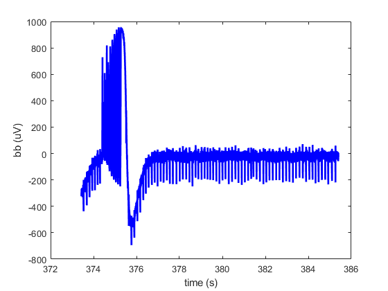
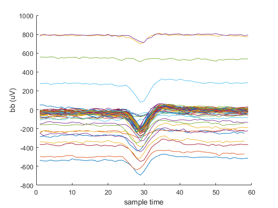
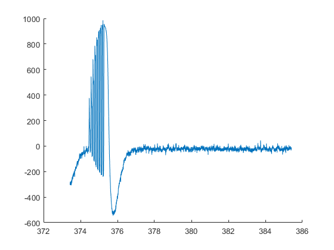
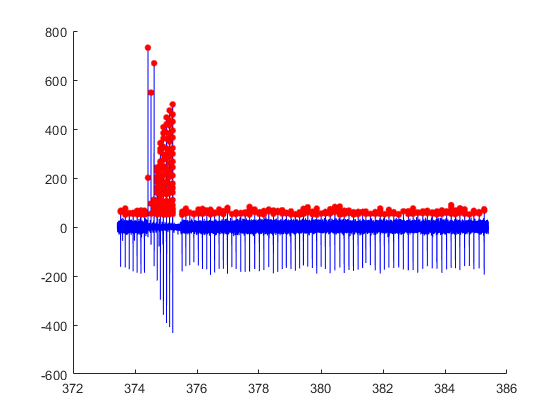

figure;
time = table2array(data(:,1));
bb = table2array(data(:,2));
plot(time,bb,'b-','LineWidth',2);
xlabel('time (s)')
ylabel('bb (uV)')
spikesBool = logical(table2array(data(:,3)));
spikeTimes = time(spikesBool,1);
bbAtSpikes = bb(spikesBool,1);
figure; hold on;
plot(time,bb,'b-','LineWidth',2);
plot(spikeTimes,bbAtSpikes,'r.','MarkerSize',15)
xlabel('time (s)')
ylabel('bb (uV)')
duration = time(end) - time(1);
numSpikes = size(spikeTimes,1);
spikeRate = numSpikes/duration;
figure; hold on;
for spike = 1:numSpikes
curSpikeTime = spikeTimes(spike,1);
tStart = curSpikeTime - 2/1000;
tEnd = curSpikeTime + 1/1000;
timeMask = time > tStart & time < tEnd;
curWaveform = bb(timeMask,1);
plot(curWaveform);
end
xlabel('sample time')
ylabel('bb (uV)')
fc = 300;
fs = 1.958*10^4;
[b,a] = butter(4,fc/(fs/2));
filtBB = filtfilt(b,a,bb);
figure; hold on;
plot(time,filtBB);
deBiasedBB = bb-filtBB;
figure; hold on
plot(time,deBiasedBB,'b');
newSpikeTimes = time(deBiasedBB > 50);
plot(newSpikeTimes,deBiasedBB(deBiasedBB > 50),'r.','MarkerSize',15)


  